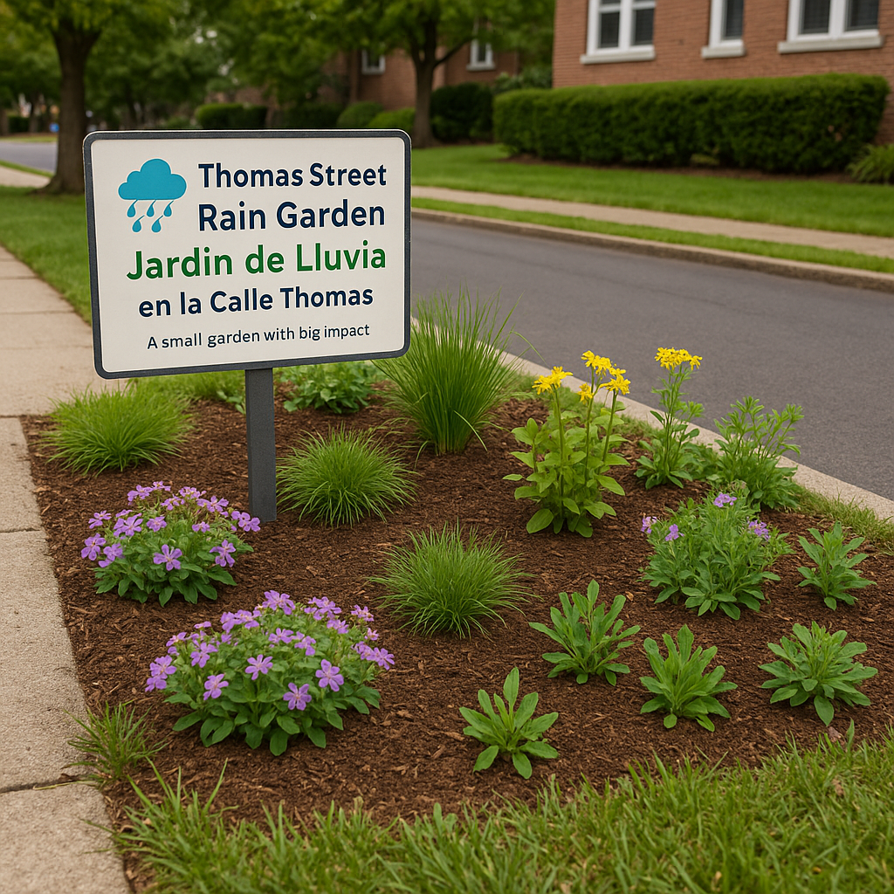

A small garden with big impact.
A rain garden is a shallow depression designed to capture and filter stormwater runoff from impervious surfaces like sidewalks, driveways, and roofs. By directing water into a specially designed garden filled with native plants, rain gardens:
This rain garden captures 100% of the sidewalk runoff from a typical residential property, making a significant impact on local stormwater management.
All plants are native to New Jersey and comply with Township code (max height: 2.5 ft, no curb encroachment).
🌿 Photo of installed rain garden will be added here
Interested in building one on your street?
This rain garden demonstrates how small-scale green infrastructure can make a big difference in stormwater management. By following Township guidelines (max height 2.5 ft, no curb encroachment, proper maintenance), you can create a compliant and beautiful rain garden that benefits your community and local ecosystem.